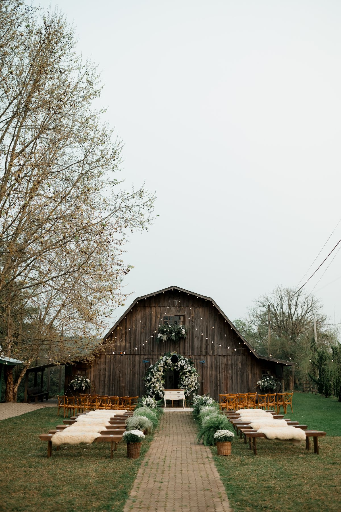
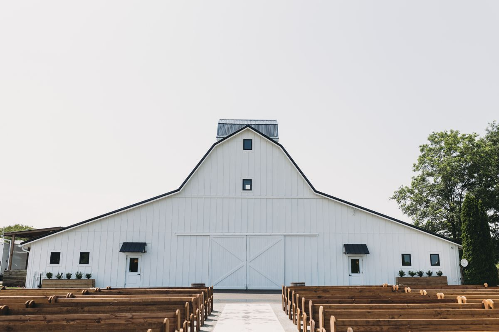
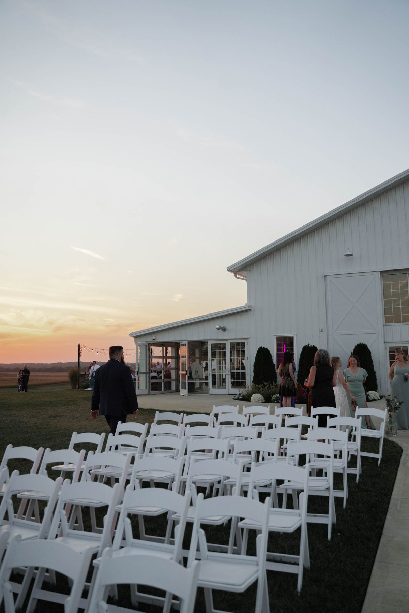

Farm Wedding Venue, Kernersville
WillStella Farm
A family-run farm wedding venue in Kernersville, with a restored mid-1800s farmhouse, barn, covered pavilion, and outdoor ceremony spots.

The venue
Weddings
Events
Barn
Covered pavilion
Outdoor ceremony locations
Bridal suites
In the restored mid-1800s farmhouse.
Antique props
On-site parking
Pet-friendly grounds
A family-run farm
WillStella Farm is a family-run venue. Call (336) 409-6554 to ask about a wedding or event.
About
WillStella Farm is a family-run farm wedding and event venue on Hastings Hill Road in Kernersville. The venue centers on a restored mid-1800s farmhouse with bridal suites, a barn, a covered pavilion, outdoor ceremony locations, antique props, on-site parking, and pet-friendly grounds.
Gallery


All gallery photos are stock photos, labeled as such. They show barn wedding venues, not this farm.
Visit
Address: 518 Hastings Hill Rd, Kernersville, NC
Hours: Monday to Friday 8:00 AM to 5:00 PM.
Phone: (336) 409-6554
Contact
WillStella Farm serves Kernersville, NC. Questions? Call (336) 409-6554.